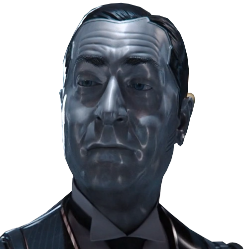
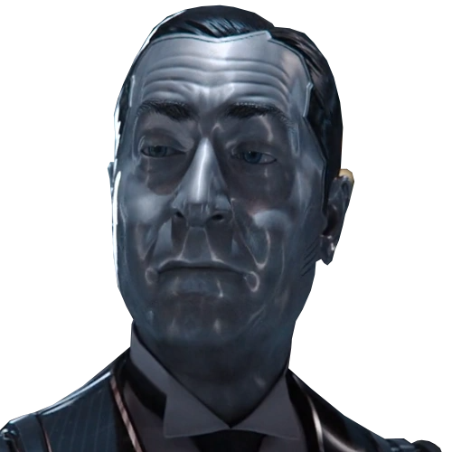

READY PLAYER ONE
The year is 2045 and most people use the virtual reality simulation known as the OASIS to escape reality. A young orphan searches for clues to a competition that will give the winner possession of the OASIS. He and his friends try to finish it before an evil corporation does.

ABOUT
Ready Player One is undoubtedly a masterpiece in the world of science fiction films, teaching us that teamwork is very important. The writers of the movie wanted to show that winning is not the most important aspect of a game.
AUTHORS

Steven Spielberg is a highly acclaimed American filmmaker, producer, and director. He is considered one of the most influential figures in the history of cinema. Born on December 18, 1946, Spielberg has had an enormous impact on the film industry and popular culture.
CASTING
Ready Player One has many characters, let's see the most relevant:
Wade Watts (Parzival): The protagonist of the story who embarks on a quest to find the hidden Easter Egg within the virtual reality world known as the OASIS.


Samantha Cook (Art3mis): A skilled gamer and one of the leaders of the rebellion against the corporate control of the OASIS.

Nolan Sorrento: The primary antagonist, an executive of Innovative Online Industries (IOI) who seeks to control the OASIS for profit.


Helen Harris (Aech): Wade's best friend and fellow "gunter" (egg hunter) in the OASIS.


i-Rok: A mercenary gamer and rival of the main characters.
 

Ogden Morrow (Curator): Co-creator of the OASIS, who left the company and now leads a reclusive life.

James Halliday (Anorak): The deceased creator of the OASIS, whose challenge drives the plot.


Toshiro Yoshiaki (Daito): He is a member of the High Five, a group of main characters who work together to solve the challenges left behind by the OASIS creator, James Halliday.
Akihide Karatsu (Sho): Sho is partnered with Daito, and together they form a strong alliance with the other main characters, particularly Parzival and Art3mis.
THE OASIS
OASIS (Ontologically Anthropocentric Sensory Immersive Simulation) is a massively multiplayer online virtual reality platform. It was created by James Halliday, a brilliant and eccentric game designer. The OASIS is accessible through special goggles and gloves, allowing users to fully immerse themselves in a digital world that offers limitless possibilities.
Within OASIS, users can interact, socialize, play, attend school, work, and participate in a wide range of activities. OASIS is not just a gaming platform; it is a complete virtual universe where people spend most of their life hours. It is designed to be a place of escapism and adventure, allowing users to experience their wildest dreams and fantasies. The OASIS contains countless planets, each with unique landscapes, environments, and themes, and is packed with characters, objects, and references from various pop culture sources.
In the context of the story, the creator of the OASIS, James Halliday, leaves behind a series of challenges and puzzles within the virtual world after his death. The person who successfully solves these challenges and finds the hidden Easter egg is promised ownership of the OASIS and the vast Halliday fortune. This forms the central plot of both the novel and the film, as various characters, including protagonist Wade Watts (Parzival), compete to find the Easter Egg and control the OASIS.


EVENTS
Introduction to the OASIS and Halliday's Challenge
- The film introduces the OASIS as a massive virtual reality universe where people escape their real-world troubles.
- James Halliday's video message announces the Easter Egg hunt, involving three keys and challenges that players must solve to find the hidden Easter Egg.